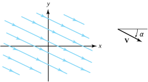
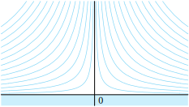
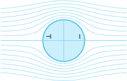
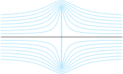

We also require that the velocity does not depend on time and the components \(p(x,y)\) and \(q(x,y)\) have continuous partial derivatives. The divergence of the vector field in Equation (10.7.1) is given by
and is a measure of the extent to which the velocity field diverges near the point. We consider only fluid flows for which the divergence is zero. This condition is more precisely characterized by the requirement that the net flow through any simply closed contour be identically zero.
If we consider the flow out of the small rectangle shown in Figure 10.7.1, then the rate of outward flow equals the line integral of the exterior normal component of \(\mathbf{V}(x,y)\) taken over the sides of the rectangle. The exterior normal component is given by \(-q\) on the bottom edge, \(p\) on the right edge, \(q\) on the top edge, and \(-p\) on the left edge. Integrating and setting the resulting net flow to zero yields
where \(x\lt x_1\lt x+\Delta x\) and \(y\lt y_2\lt y+\Delta y\text{.}\) Substitution of the expressions displayed in Equation (10.7.3) into Equation (10.7.2) and subsequently dividing through by \(\Delta x\ \Delta y\) results in
and is an indication of how the field swirls in the vicinity of a point. Imagine that a “fluid element” at the point \((x,y)\) is suddenly frozen and then moves freely in the fluid. The fluid element will rotate with an angular velocity given by
We consider only fluid flows for which the curl is zero. Such fluid flows are called irrotational. This condition is more precisely characterized by requiring that the line integral of the tangential component of \(\mathbf{V}(x,y)\) along any simply closed contour be identically zero. If we consider the rectangle in Figure 10.7.1, then the tangential component is given by \(p\) on the bottom edge, \(q\) on the right edge, \(-p\) on the top edge, and \(-q\) on the left edge. Integrating and equating the resulting circulation integral to zero yields
We can use the mean value for integrals with this equation to deduce that \(q_x(x_1,y_1) - p_y(x_2, y_2) =0\text{.}\) Letting \(\Delta x \to 0\) and \(\Delta y \to 0\) yields
Equation (10.7.4) and this equation show that the function \(f(z) = p(x,y) - iq(x,y)\) satisfies the Cauchy-Riemann equations and is an analytic function. If we let \(F(z)\) denote the antiderivative of \(f(z)\text{,}\) then
so \(\phi(x,y)\) is the velocity potential for the flow, and the curves
\begin{equation*}
\phi(x,y) = K_1
\end{equation*}
are called equipotentials. The function \(\psi(x,y)\) is called the stream function. The curves
\begin{equation*}
\psi(x,y) = K_2
\end{equation*}
are called streamlines and describe the paths of the fluid particles. To demonstrate this result, we implicitly differentiate \(\psi(x,y)=K_2\) and find that the slope of a vector tangent is given by
The boundary condition for an ideal fluid flow is that \(\mathbf{V}\) should be parallel to the boundary curve containing the fluid (the fluid flows parallel to the walls of a containing vessel). In other words, if Equation (10.7.6) is the complex potential for the flow, then the boundary curve must be given by \(\psi(x,y) =K\) for some constant \(K\text{;}\) that is, the boundary curve must be a streamline.
If the function \(w=S(z)=u(x,y)+iv(x,y)\) is a one-to-one conformal mapping from a domain \(D\) in the \(z\)-plane onto \(G\text{,}\) then the composite function
Figure10.7.3.The image of a fluid flow under a conformal mapping
Proof.
From Equation (10.7.5), \(F_1(w)\) is an analytic function. Since the composition of analytic functions is analytic, \(F_2(z)\) is the required complex potential for an ideal fluid flow in \(D\text{.}\)
are the new velocity potential and stream function, respectively, for the flow in \(D\text{.}\) A streamline or natural boundary curve
\begin{equation*}
\psi(x,y)=K
\end{equation*}
in the \(z\) plane is mapped onto a streamline or natural boundary curve
\begin{equation*}
\Psi(u,v)=K
\end{equation*}
in the \(w\) plane by the transformation \(w=S(z)\text{.}\) One method for finding a flow inside a domain \(D\) in the \(z\) plane is to conformally map \(D\) onto a domain \(G\) in the \(w\) plane in which the flow is known.
For an ideal fluid with uniform density \(\rho\text{,}\) the fluid pressure \(P(x,y)\) and speed \(|\mathbf{V}(x,y)|\) are related by the following special case of Bernoulli’s equation:
The streamlines are parallel lines given by the equation \(bx+ay=\) constant and are inclined at an angle \(\alpha = -\mathrm{Arctan}(\frac{b}{a})\text{,}\) as indicated in Figure 10.7.5.

Figure10.7.5.A uniform parallel flow
Example10.7.6.
Consider the complex potential \(F(z) = \frac{A}{2}z^2\text{,}\) where \(A\) is a positive real number. The velocity potential and stream function are given by
form a family of hyperbolas with asymptotes along the coordinate axes. The velocity vector \(\mathbf{V}=A\overline{z}\) indicates that in the upper half-plane \(\mathrm{Im}(z) >0\text{,}\) the fluid flows down along the streamlines and spreads out along the \(x\) axis, as against a wall, as depicted in Figure 10.7.7.

Figure10.7.7.The fluid flow with complex potential \(F(z)=\frac{A}{2}z^2\)
Example10.7.8.
Find the complex potential for an ideal fluid flowing from left to right across the complex plane and around the unit circle \(|z|=1\text{.}\)
Solution.
We use the fact that the conformal mapping \(w=S(z) =z+\frac{1}{z})\) maps the domain \(D=\{z:|z|\lt 1\}\) one-to-one and onto the \(w\) plane slit along the segment \(-2 \le u \le 2, \; v=0\text{.}\) The complex potential for a uniform horizontal flow parallel to this slit in the \(w\) plane is
where \(A\) is a positive real number. The stream function for the flow in the \(w\) plane is \(\psi(u,v) =Av\) so that the slit lies along the streamline \(\Psi(u,v) =0\text{.}\)
The composite function \(F_2(z) = F_1(S(z))\) determines the fluid flow in the domain \(D\text{,}\) where the complex potential is
along the \(x\) axis and the curve \(r-\frac{1}{r}=0\text{,}\) which is the unit circle \(r=1\text{.}\) Thus the unit circle can be considered as a boundary curve for the fluid flow.
The approximation \(F_2(z) = A(z+\frac{1}{z}) \approx Az\) is valid for large values of \(z\text{,}\) so we can approximate the flow with a uniform horizontal flow having speed \(|\mathbf{V}|=A\) at points that are distant from the origin. The streamlines
under the mapping \(w=S(z) =z+\frac{1}{z}\) are illustrated in Figure 10.7.9.

Figure10.7.9.Fluid flow around a circle
Example10.7.10.
Find the complex potential for an ideal fluid flowing from left to right across the complex plane and around the segment from \(-i\) to \(i\text{.}\)
Solution.
We use the conformal mapping
\begin{equation*}
w = S(z) = (z^2+1)^\frac{1}{2}=(z+i)^\frac{1}{2}(z-i)^\frac{1}{2}
\end{equation*}
where the branch of the square root of \(Z= z \pm i\) in each factor is \(Z^\frac{1}{2}=R^\frac{1}{2}e^{i\theta /2}\text{,}\) where \(R=|Z|\text{,}\) and \(\theta = \arg_{-\frac{\pi}{2}}(Z), \; -\frac{\pi}{2}\lt\)\(\theta\le \frac{3\pi}{2}\text{.}\) The function given by \(w=S(z)\) is a one-to-one conformal mapping of the domain \(D\) consisting of the \(z\) plane slit along the segment \(x=0
\,v=0\text{.}\) The complex potential for a uniform horizontal flow parallel to the slit in the \(w\) plane is given by \(F_1(w) =Aw\text{,}\) where for convenience we choose \(A=1\) and where the slit lies along the streamline \(\Psi(u,v) =c=0\text{.}\) The composite function
is the complex potential for a fluid flow in the domain \(D\text{.}\) The streamlines given by \(\psi(x,y) =c\) for the flow in \(D\) are obtained by finding the preimage of the streamline \(\Psi(u,v) =c\) in \(G\) given by the parametric equations
\begin{equation*}
v =c \text{ and } u = t, \text{ for } -\infty \lt t \lt \infty\text{.}
\end{equation*}
The corresponding streamline in \(D\) is found by solving the equation
\begin{equation*}
t + ic = (z^2+1)^\frac{1}{2}
\end{equation*}
for \(x\) and \(y\) in terms of \(t\text{.}\) Squaring both sides of this equation yields
Eliminating \(t\) in the last two equations gives \(c^2=(x^2+c^2) (y^2-c^2)\text{,}\) and we can solve for \(y\) in terms of \(x\) to get
\begin{equation*}
y =c \sqrt{\frac{1+c^2+x^2}{c^2+x^2}}
\end{equation*}
for streamlines in \(D\text{.}\) For large values of \(x\text{,}\) this streamline approaches the asymptote \(y=c\) and approximates a horizontal flow, as shown in Figure 10.7.11.

Figure10.7.11.Flow around a segment
ExercisesExercises
1.
Consider the ideal fluid flow for the complex potential \(F(z)=A(z+\frac{1}{z})\text{,}\) where \(A\) is a positive real number.
(a)
Show that the velocity vector at the point \((1,\theta), \, z=re^{i\theta}\) on the unit circle is given by \(\mathbf{V}(1,\theta) = A(1-\cos 2\theta -i\sin 2\theta)\text{.}\)
Show that the velocity vector \(\mathbf{V}(1,\theta)\) is tangent to the unit circle \(|z|=1\) at all points except \(-1\) and \(+1\text{.}\)
\hint{Show that \(\mathbf{V}\cdot \mathbf{P}=0\text{,}\) where \(\mathbf{P}=\cos \theta +i\sin \theta\text{.}\)}
(c)
Show that the speed at the point \((1,\theta)\) on the unit circle is given by \(|\mathbf{V}|=2A|\sin \theta|\) and that the speed attains the maximum of \(2A\) at the points \(\pm i\) and is zero at the points \(\pm 1\text{.}\) Where is the pressure the greatest?
Solution.
\(z=1\) and \(z=-1\text{.}\)
2.
Show that the complex potential \(F(z) = ze^{-i\alpha} + \frac{e^{i\alpha}}{z}\) determines the ideal fluid flow around the unit circle \(|z|=1\text{,}\) where the velocity at points distant from the origin is given approximately by \(\mathbf{V} \approx e^{i\alpha}\text{;}\) that is, the direction of the flow for large values of \(z\) is inclined at an angle \(\alpha\) with the \(x\) axis, as shown in Figure 10.7.12.
3.
Consider the ideal fluid flow in the channel bounded by the hyperbolas \(xy=1\) and \(xy=4\) in the first quadrant, where the complex potential is given by \(F(z) =\frac{A}{2}z^2\) and \(A\) is a positive real number.
(a)
Find the speed at each point, and find the point on the boundary at which the speed attains a minimum value.
Solution.
Speed \(=A|\bar{z}|\text{.}\) The minimum speed is \(A|1-i|=A\sqrt{2}\text{.}\)i
(b)
Where is the pressure greatest?
Solution.
The maximum pressure in the channel occurs at the point \(1+i\text{.}\)
4.
Show that the stream function is given by \(\psi(r,\theta) = Ar^3\sin 3\theta\) for an ideal fluid flow around the angular region \(0\lt \theta \lt \frac{\pi}{3}\) indicated in Figure 10.7.13. Sketch several streamlines of the flow.
\hint{Use the conformal mapping \(w=z^3\text{.}\)}
Consider the complex potential \(F(z) =A(z^2+\frac{1}{z^2})\)
(a)
Let \(A>0\text{.}\) Show that \(F(z)\) determines an ideal fluid flow around the domain \(r>1, \, 0\lt \theta \lt \frac{\pi}{2}\) indicated in Figure 10.7.15, which shows the flow around a circle in the first quadrant.
\hint{Use the conformal mapping \(w=z^2\text{.}\)}
Show that the speed at the point \(z=e^{i\theta}\) on the quarter-circle \(r=1, \, 0\lt \theta \lt \frac{\pi}{2}\) is given by \(\mathbf{V}=4 A|\sin 2\theta|\text{.}\)
(c)
Determine the stream function for the flow and sketch several streamlines.
7.
Show that \(F(z) = \sin z\) is the complex potential for the ideal fluid flow inside the semi-infinite strip \(-\frac{\pi}{2} \lt x \lt \frac{\pi}{2}, \, y>0\) indicated in Figure 10.7.16. Find the stream function.
8.
Let \(w=S(z) =\frac{1}{2}[z+(z^2-4)^\frac{1}{2}]\) denote the branch of the inverse of \(z=w+\frac{1}{w}\) that is a one-to-one mapping of the \(z\) plane slit along the segment \(-2 \le x \le 2, \, y=0\) onto the domain \(|w|>1\text{.}\) Use the complex potential \(F_2(w) = we^{-i\alpha} + \frac{1}{w}e^{i\alpha}\) in the \(w\) plane to show that the complex potential \(F_1(z) = z \cos \alpha -i(z^2-4)^\frac{1}{2} \sin \alpha\) determines the ideal fluid flow around the segment \(-2 \le x \le 2, \, y=0\text{,}\) where the velocity at points distant from the origin is given by \(\mathbf{V} \approx e^{i\alpha}\text{,}\) as shown in Figure 10.7.17.
9.
Consider the complex potential \(F(z) =-i\mathrm{Arcsin}(z)\)
(a)
Show that \(F(z)\) determines the ideal fluid flow through the aperture from \(-1\) to \(+1\text{,}\) as indicated in Figure 10.7.18.